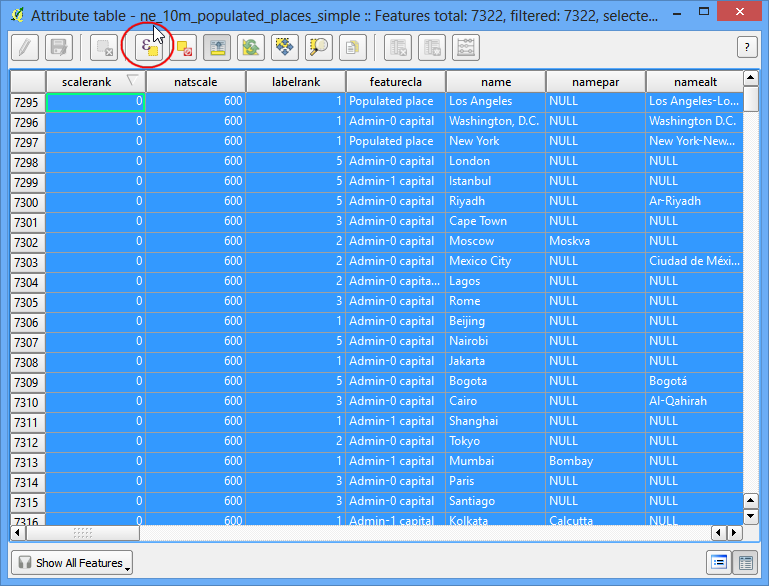
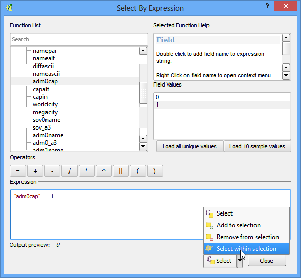
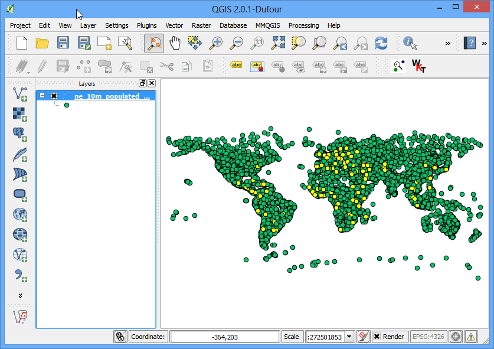
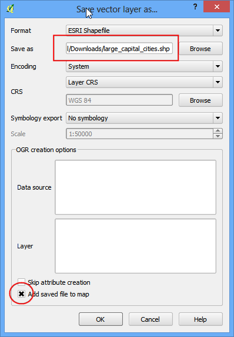
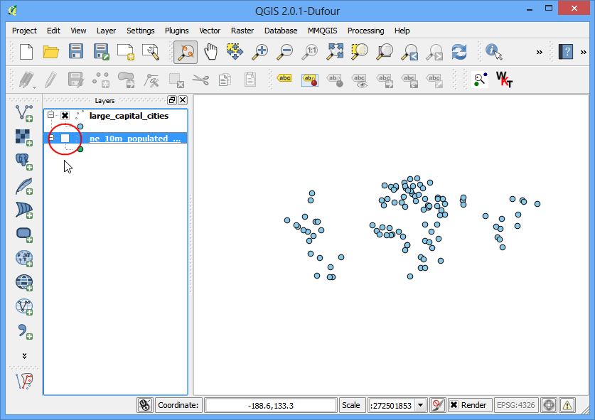

Working with Attributes¶
GIS data has two parts - features and attributes. Attributes are structured data about each feature. This tutorial shows how to view the attributes and do basic queries on them QGIS.
Overview of the task¶
The dataset for this tutorial contains information about populated places of the world. The task is to query and find all the capital cities in the world that have a population greater than 10,00,000.
Get the data¶
We will use the Populated Places dataset from Natural Earth.
Download the Natural Earth Populated Places shapefile..
Procedure¶
- Once you have downloaded the data, open QGIS. Go to Layer ‣ Add Vector Layer.

- Click on Browse and navigate to the folder where you downloaded the data.

- Locate the downloaded zip file ne_10m_populated_places_simple.zip. You do not need to unzip the file. QGIS has the ability to read zip files directly. Select the file and click Open.

- You will get a dialog asking you to select the layer to open. Select ne_10m_populated_places_simple.shp and click OK.

- The selected layer will now be loaded in QGIS and you will see many points representing the populated places of the world.

- To see the attributes of right-click the layer and select Open Attribute Table.

- Explore the various attributes and their values.

- We are interested in the population of each feature, so pop_max is the field we are looking for. You can click twice on the field header to sort the column in descending order.

- Now we are ready to perform our query on these attributes. Select features using an expression.

- In the Select By Expression window, expand the Fields and Values section and double-click the pop_max label. You will notice that it is added to the expression section at the bottom. If you aren’t sure about the field values, you can click the Load all unique values to see what the attribute values are present in the dataset. For this exercise, we are looking to find all features that have a population greater than 10,00,000. So complete the expression as “pop_max” > 1000000 and click Select.

- Click on Close and return to the main QGIS window. You will notice that a subset of points is now rendered in yellow. This is the result of our query and you are seeing all places from the dataset that have the pop_max attribute value greater than 10,00,000.

- The goal for this exercise is to find the places that are country capitals. Let’s refine our query to select only those places which are capitals. Click on the Select feature using an expression button in the attribute table.

- The field containing this data is adm0cap. The value 1 indicates that the place is a capital. Enter the expression as “adm0cap” = 1. Since we want to search only within our previous query results, select Select within selection.

- Click on Close and return to the main QGIS window. Now you will see a smaller subset of the points selected. This is the result of the second query and shows all places from the dataset that are country capitals as well as have population greater than 10,00,000.

- Let’s save these results to a separate layer. Right-click on the layer and select Save Selection As.

- Keep the format selection as ESRI Shapefile and enter the output name as large_capital_cities.shp. Check the box next to Add saved file to map and click OK.

- The newly created shapefile will be automaticlally loaded into QGIS. Turn off the populated places layer by un-checking the box next to it. Now, you will see only the features from the newly created layer containing capital cities of the world that have population greater than 10,00,000.
